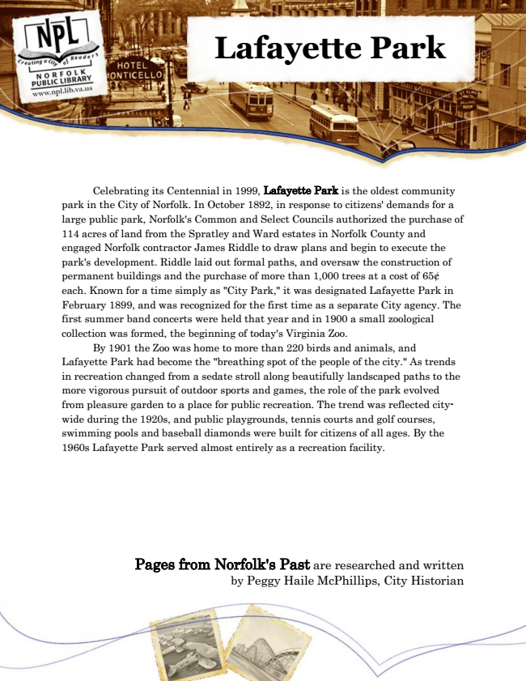

Lafayette Park
Celebrating its Centennial in 1999, Lafayette Park is the oldest community park in the City of Norfolk. In October 1892, in response to citizens' demands for a large public park, Norfolk's Common and Select Councils authorized the purchase of 114 acres of land from the Spratley and Ward estates in Norfolk County and engaged Norfolk contractor James Riddle to draw plans and begin to execute the park's development. Riddle laid out formal paths, and oversaw the construction of permanent buildings and the purchase of more than 1,000 trees at a cost of 65¢ each. Known for a time simply as "City Park," it was designated Lafayette Park in February 1899, and was recognized for the first time as a separate City agency. The first summer band concerts were held that year and in 1900 a small zoological collection was formed, the beginning of today's Virginia Zoo.
By 1901 the Zoo was home to more than 220 birds and animals, and Lafayette Park had become the "breathing spot of the people of the city." As trends in recreation changed from a sedate stroll along beautifully landscaped paths to the more vigorous pursuit of outdoor sports and games, the role of the park evolved from pleasure garden to a place for public recreation. The trend was reflected city- wide during the 1920s, and public playgrounds, tennis courts and golf courses, swimming pools and baseball diamonds were built for citizens of all ages. By the 1960s Lafayette Park served almost entirely as a recreation facility.
Pages from Norfolk's Past are researched and written by Peggy Haile McPhillips, City Historian